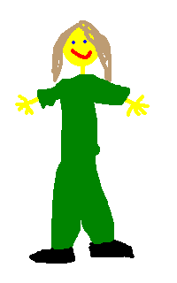
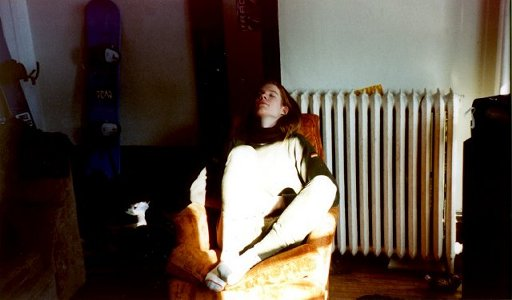
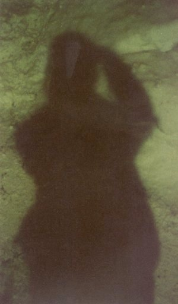

some people want to see pictures of me. i can’t stop them from wanting to, but i can refuse to show them any pictures and then send them pictures of elton john instead of my friends... but i’mn’t like that.

it’s a self-portrait.

jadin took this photo. it’s one of the few pictures of myself that i kinda like...

this is my shadow.
pictures of things other than me.
i love the view source command and you should, too.
copyright lithis, 2000–2002.